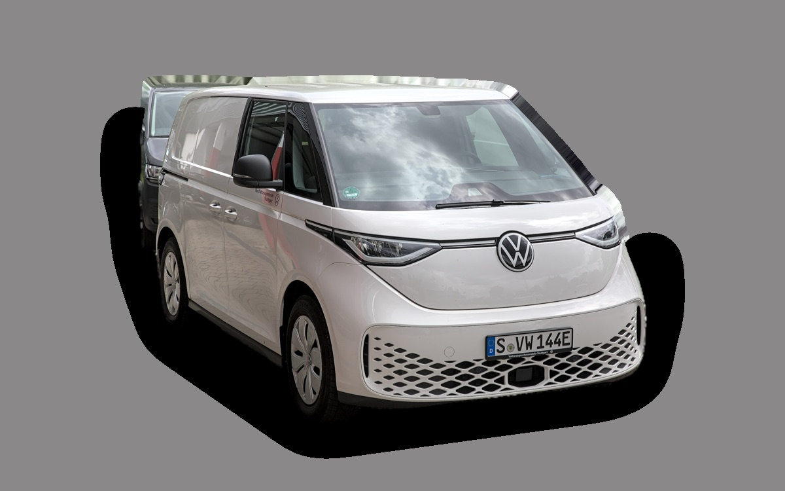
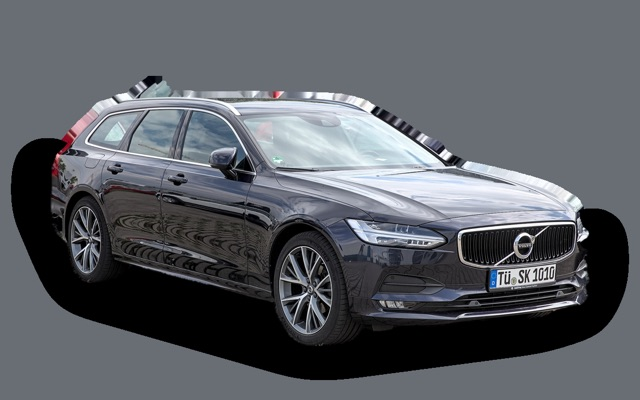
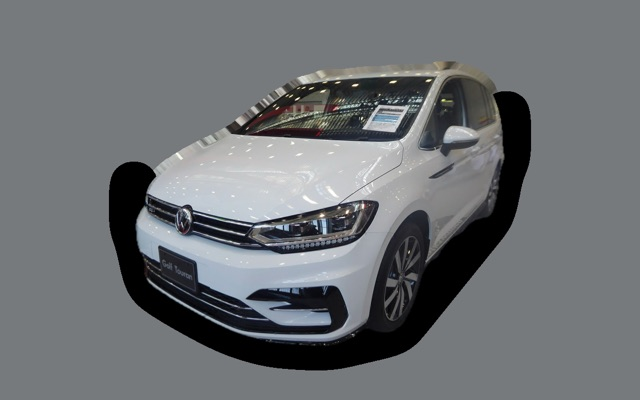
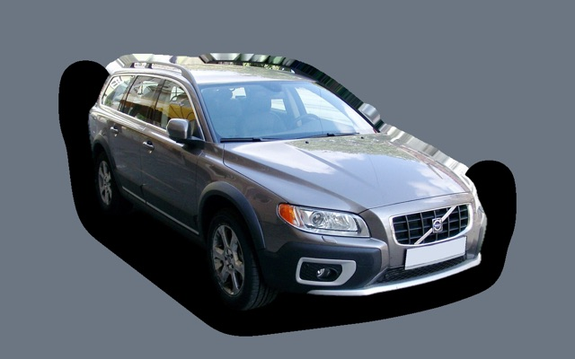
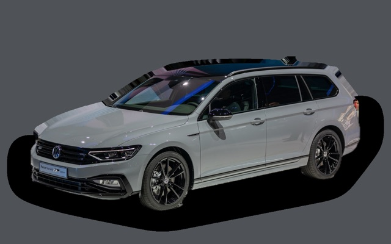
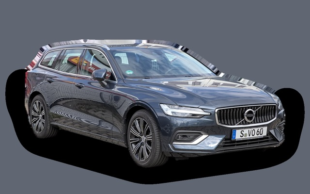
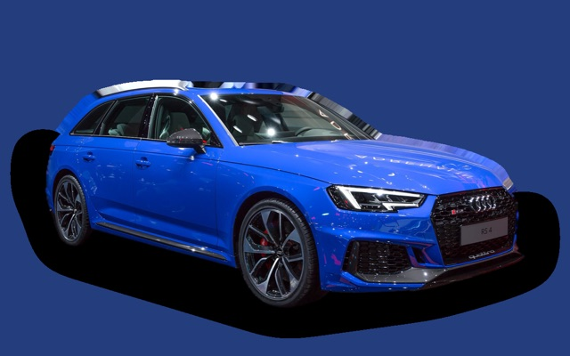

Vad kostar en Volkswagen ID. Buzz per månad?
En Volkswagen ID. Buzz från 2023 kostar cirka 4 116 kr i månaden, allt inräknat.
4 116 krper månad, årsmodell 2023
396 000 krpris, årsmodell 2023
624 400 krnypris från
Bprisvärdhetsbetyg (2023)


Månadskostnad per årsmodell
| Årsmodell | Version i beräkningen | Pris | Per månad | Betyg |
|---|---|---|---|---|
| 2026 | Pro 86 kWh 286, Life, 5 säten | 624 400 kr | 6 476 kr | C |
| 2023 | Pro 77 kWh 204, Life, 5 säten | 396 000 kr | 4 116 kr | B |
Räknat på 5 års ägande och 1 250 mil per år, med bränslepriser från 2026-10-22. Månadskostnaden innehåller värdeminskning, drivmedel, service och reparationer, försäkring och fordonsskatt.
Så fördelas kostnaden för en 2023:a
- Värdeminskning: 2 611 kr/mån
- Drivmedel: 531 kr/mån
- Service och reparationer: 373 kr/mån
- Försäkring: 571 kr/mån
- Fordonsskatt: 30 kr/mån
Begagnatpriser i annonser
| Årsmodell | Medianpris | Annonser | Typiskt miltal |
|---|---|---|---|
| 2026 | 639 900 kr | 6 | 1 600 mil |
| 2025 | 559 800 kr | 22 | 1 700 mil |
| 2024 | 429 800 kr | 15 | 5 800 mil |
| 2023 | 409 000 kr | 42 | 7 400 mil |
Medianpriset i svenska annonser per årsmodell i oktober 2026 (källa: Blocket, AutoUncle). Annonspriser är utgångspriser, och slutpriset kan bli lägre.
Motorer och versioner
| Motor | Drivmedel | Effekt | 0–100 km/h | Förbrukning (WLTP) | Räckvidd | Årsmodeller | Pristillägg |
|---|---|---|---|---|---|---|---|
| Pro 77 kWh 204 | El | 204 hk | 10,2 s | 20,5 kWh/100 km | 420 km | 2022–2024 | – |
| Pro 86 kWh 286 | El | 286 hk | 7,9 s | 20,5 kWh/100 km | 470 km | från 2024 | – |
| GTX 4MOTION 340 | El | 340 hk | 6,5 s | 22 kWh/100 km | 440 km | från 2025 | +102 800 kr |
- Utrustning: Life, Style (+40 000 kr)
- Säten: 5 säten, 7 säten (+35 000 kr)
Fakta
- Kaross
- Kombi
- Årsmodeller
- sedan 2022
- Nypris från
- 624 400 kr
- Bagage
- 1121 liter
- Euro NCAP
- 5 av 5 stjärnor
- Nybilsgaranti
- 3 år
- Driftsäkerhet
- 3 av 5
- Helförsäkring, uppskattning
- 9 400 kr/år
- Service, uppskattning
- 2 900 kr/år
Fördelar och nackdelar
Fördel
Enormt utrymme och mycket charm.
Nackdel
Dyr och hög förbrukning för en elbil.
Liknande bilar

Volvo V904 096 kr/mån som 2022:a
Volkswagen Touran4 140 kr/mån som 2022:a
Volvo XC704 202 kr/mån som 2013:a
Volkswagen Passat B84 018 kr/mån som 2020:a
Volvo V603 980 kr/mån som 2023:a
Audi A4 Avant3 937 kr/mån som 2021:a
Uppdaterad 2026-10-28 · annonsdata okt 2026